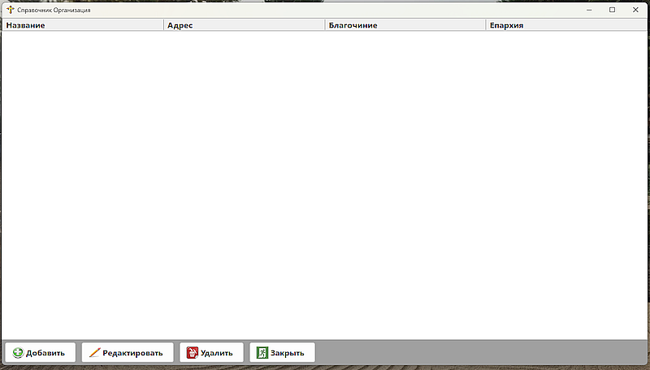
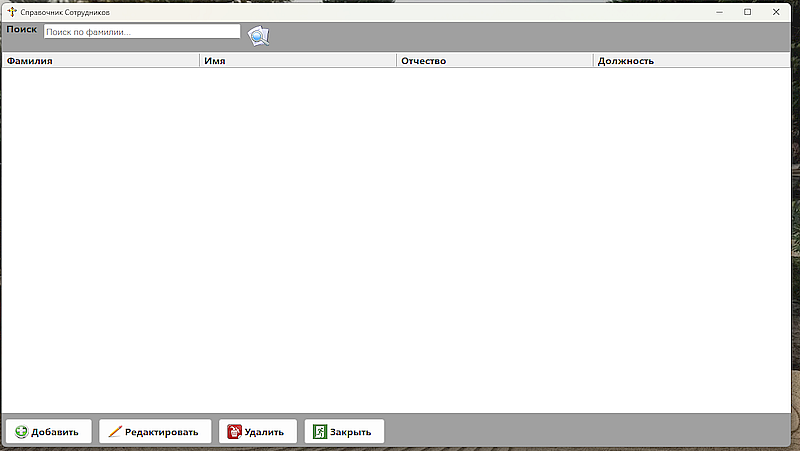
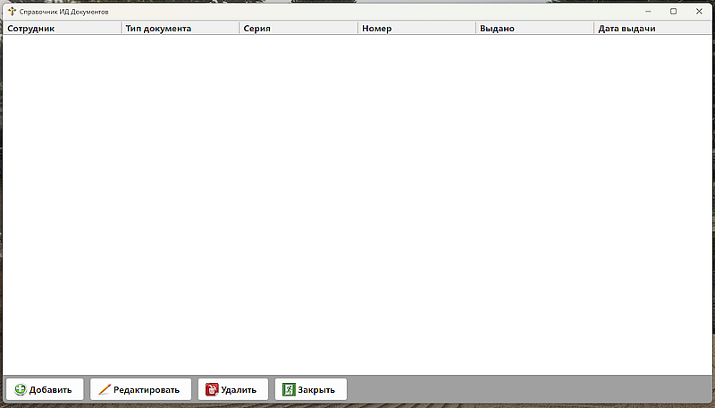
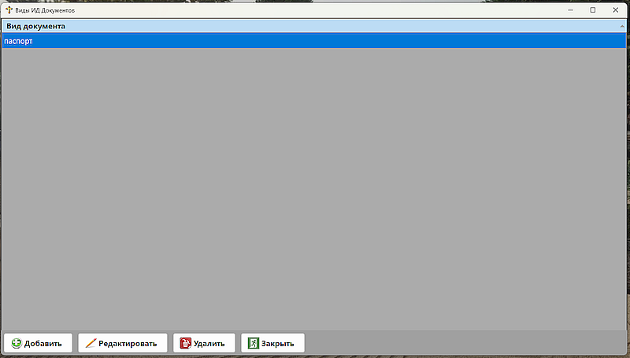
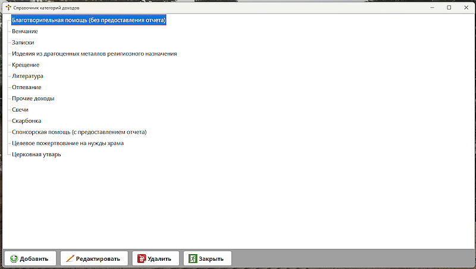
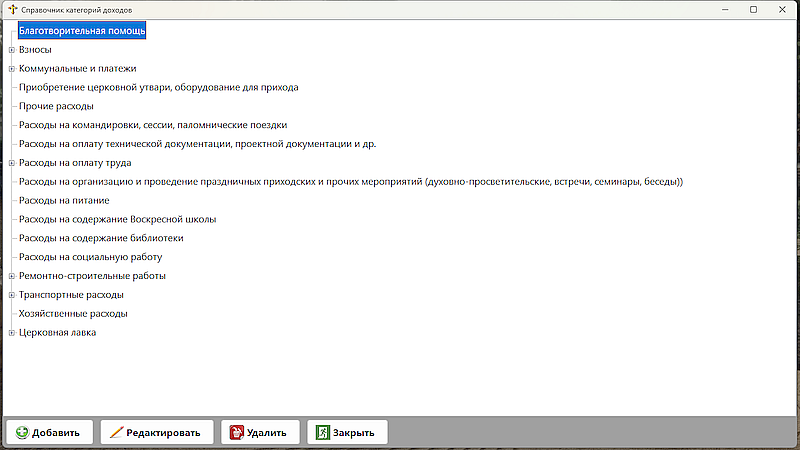
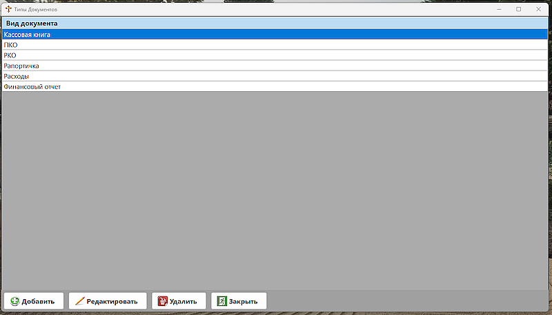
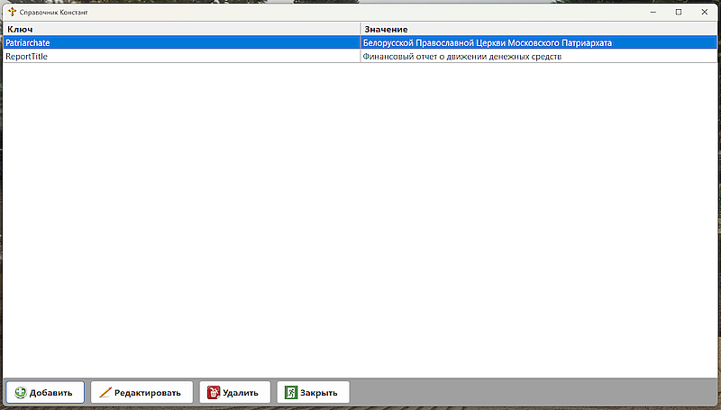

Работа со справочниками |
|
Работа со справочникамиПункт меню 'Спрвочники' содержит необходимые в работе с программой спрвочники: 'Организации' - список организации (прихода).  Рис. 1 - Справочник Организациии 'Сотрудники' - список всех сотрудников прихода.  Рис. 2 - Справочник Сотрудники 'ИД документы' - список идентификационных документов сотрудников.  Рис. 3 - Справочник ИД документы 'Виды ИД документов' - список видов ИД документов сотрудников.  Рис. 4 - Справочник видов ИД документов 'Категории доходов' - список категорий доходов.  Рис. 5 - Справочник категорий доходов 'Категории расходов' - список категорий расходов.  Рис. 6 - Справочник категорий расходов 'Типы документов' - список типов документов сотрудников.  Рис. 7 - Справочник типов документов 'Константы' - список постоянных значений (рекомендуется заполнять разработчиком, либо опытным специалистом. Ключ постоянного значения должен быть на латинице). Отражаются константы, которые часто используются в программе, в отчетах и т.п.  Рис. 8 - Справочник постоянных значений | |
По вопросам: viruss954@gmail.com